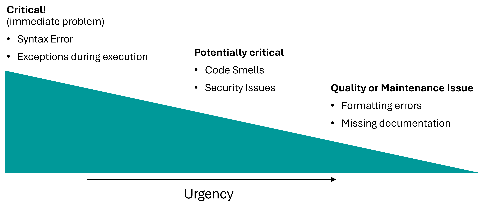

7. Code Smells#
Quote: “You know you are working on clean code when each routine you read turns out to be pretty much what you expected. You can call it beautiful code when the code also makes it look like the language was made for the problem.”
Ward Cunningham
7.1. Was ist ein Code Smell?#
Code Smells, auf Deutsch “Codegeruch,” sind Symptome im Code, die auf tiefere Probleme im Design oder in der Struktur der Software hinweisen. Obwohl der Code funktional korrekt sein kann, machen diese „Gerüche“ den Code oft schwerer lesbar und können Risiken bergen, wenn zukünftig Änderungen vorgenommen werden müssen.
Allgemein gilt: Probleme im Code reichen von offensichtlichen, kritischen Fehlern (wie Syntaxfehlern und Bugs) bis hin zu subtileren, machmal sogar eher kosmetischen Problemen reichen, wie z.B. kleinere Formatierungsfehler. Wir hatten im Linting Teil bereits besprochen, dass auch Formatierung sehr stark zur Lesbarkeit und damit langfristig auch direkt zur Code-Qualität beiträgt. Code Smells sind oft grundlegendere Probleme als viele kleinere Formatierungsfragen, aber stellen auch keine akuten Fehler dar wie etwas “Bugs” oder Syntaxfehler.
Es ist wichtig zu verstehen, dass ein Code Smell nicht zwangsläufig einen direkten Fehler darstellt, sondern vielmehr ein Hinweis auf eine schlechte Implementierung oder ein Designproblem ist, das möglicherweise später zu echten Fehlern führen kann. Oft entstehen diese durch unzureichendes Refactoring, Zeitdruck oder fehlendes Wissen über Best Practices.

7.1.1. Beispiel & Live-Coding-Übung:#
Aufgabe: Identifiziere die Probleme oder nicht-idealen Muster im folgenden Code und diskutiere Verbesserungen gemeinsam mit deinen Kommilitonen.
print("How good do you feel today? (from 1=horrible to 10=perfect)?")
user_input1 = input("Your answer:")
if user_input1 == "":
print("I got no input...")
try:
int(user_input1)
if int(user_input1) not in range(1, 11):
raise ValueError("Only numbers between 1 and 10 are allowed.")
except:
print("You need to enter a number from 1 to 10.")
print("How do you like this course? (from 1=hate it to 10=love it)?")
user_input2 = input("Your answer:")
if user_input2 == "":
print("I got no input...")
try:
int(user_input2)
if int(user_input1) not in range(1, 11):
raise ValueError("Only numbers between 1 and 10 are allowed.")
except:
print("You need to enter a number from 1 to 10.")
7.2. Häufige Code Smells#
7.2.1. Duplizierter Code#
Ein prominenter Code Smell im obigen Beispiel ist die Duplizierung. Das Prinzip DRY (Don’t Repeat Yourself) betont, dass jedes Element in einer Anwendung nur eine einzige Repräsentation im Code haben sollte. Duplizierter Code ist nicht nur unübersichtlich, sondern kann auch zu Fehlern führen, wenn Änderungen an mehreren Stellen vorgenommen werden müssen.
Refactored Code: Eine mögliche refaktorisierte Lösung wäre:
def get_user_input(prompt_message):
print(prompt_message)
user_input = input("Your answer:")
if user_input == "":
print("I got no input...")
return None
try:
value = int(user_input)
if value not in range(1, 11):
raise ValueError("Only numbers between 1 and 10 are allowed.")
return value
except:
print("You need to enter a number from 1 to 10.")
return None
feeling_today = get_user_input("How good do you feel today? (from 1=horrible to 10=perfect)?")
course_opinion = get_user_input("How do you like this course? (from 1=hate it to 10=love it)?")
Hier wurde durch das Erstellen einer Funktion (get_user_input()) die Code-Dopplung vermieden. Es geht aber weniger um das reine Einsparen von Codezeilen, sondern vielmehr darum, dass es jetzt einen, statt vieler, vielleicht auch verstreuter, Instanzen gibt die wir zentral kontrollieren, anpassen, erweitern können.
Wir könnten den Code jetzt zum Beispiel sehr leicht erweitern und von zwei auf sehr viel mehr Fragen ausweiten!
def get_user_input(prompt_message):
"""Get user input and test for numbers."""
print(prompt_message)
user_input = input("Your answer:")
if user_input == "":
print("I got no input...")
return None
try:
value = int(user_input)
if value not in range(1, 11):
raise ValueError("Only numbers between 1 and 10 are allowed.")
return value
except:
print("You need to enter a number from 1 to 10.")
return None
user_inputs = []
for question in questions:
user_inputs.append(get_user_input(question))
Hier wäre questions einfach eine Liste mit Fragen.
Warum sollte man duplizierten Code vermeiden?
Erhöht unnötig die Codebasis und macht sie schwerer überschaubar
Schafft zusätzliche Fehlerquellen
Erschwert die Wartung des Codes
Zusätzliche Risiken von dupliziertem Code:
Änderungen oder Bugfixes müssen an mehreren Stellen im Code vorgenommen werden, was den Aufwand erhöht und das Risiko erhöht, dass an einer Stelle etwas übersehen wird.
Bei der Erweiterung oder Refaktorisierung des Codes müssen alle Vorkommen duplizierter Abschnitte berücksichtigt werden, was zu Inkonsistenzen führen kann.
Wann sollten wir unseren Code überarbeiten?
Eine allgemeine Faustregel ist die Regel der Drei: Wenn du ähnlichen Code zum dritten Mal schreibst, ist das ein Hinweis darauf, dass eine Refaktorisierung sinnvoll sein könnte.
7.2.2. Magische Zahlen#
Dies sind Zahlen, die direkt im Code verwendet werden, ohne eine erklärende Bezeichnung oder einen Kontext. Die Verwendung von benannten Konstanten kann den Code lesbarer und wartbarer machen.
Beispiel:
sensor_signal = sensor_signal - 181.247
Besser:
GEMESSENER_SENSOR_OFFSET = 181.247 # letzte Kalibrierung: 17.4.2022
...
sensor_signal = sensor_signal - GEMESSENER_SENSOR_OFFSET
7.2.3. Toter Code / Redundanter Code#
Code, der nicht mehr verwendet wird oder niemals ausgeführt werden kann, stellt nur Ballast in der Codebasis dar und erschwert das Lesen und die Wartung.
Beispiel:
import random
def coin_flip():
if random.randint(0, 1):
return "Heads!"
else:
return "Tails!"
return "The coin landed on its edge!"
Die letzte return-Anweisung ist unerreichbar und somit redundant.
7.2.4. Zu komplexer Code#
Komplexität im Code bezieht sich nicht nur darauf, wie viele Zeilen der Code hat oder wie groß die Funktionen sind. Es geht darum, wie schwer es ist, den Code zu verstehen, zu warten und zu erweitern. Diese Komplexität wird oft durch verschiedene Programmiermuster eingeführt, die auf den ersten Blick harmlos oder sogar „effizient“ erscheinen, aber langfristig zu Wartungsproblemen führen können.
7.2.4.1. Tief verschachtelter Code#
Eine häufige Quelle für Komplexität ist zu tief verschachtelter Code. Tief verschachtelter Code ist schwer zu lesen und zu verstehen, da man sich merken muss, zu welchen Bedingungen oder Schleifen jede Zeile gehört.
Beispiel:
def process_elements(input_lst):
while True:
if input_lst is None:
break
elif len(input_lst) > 1:
for element in input_lst:
if isinstance(element, (str, int)):
if element.lower() != "stop":
try:
got_number = int(element)
except ValueError:
got_number = None
else:
if got_number > 0:
print("Got a positive number!")
elif got_number == 0:
print("Got zero.")
else:
print("Got a negative number.")
else:
print("Found stop command:", element)
else:
print("List is too short to process.")
break
# Use this function
input_lst = ["1", "-2", "3", "stop"]
process_elements(input_lst)
Schritt-für-Schritt-Optimierung:
Den Code flacher gestalten, indem man frühzeitig
returnverwendet oder frühzeitig aus Schleifen ausbricht.Eingebaute Funktionen und Bibliotheken nutzen, wo immer möglich.
Überflüssige Prüfungen vermeiden.
Verbesserter Code:
def process_elements(input_lst):
if input_lst is None:
return
if len(input_lst) <= 1:
print("List is too short to process.")
return
for element in input_lst:
process_element(element)
def process_element(element):
if not isinstance(element, (str, int)):
return
if str(element).lower() == "stop":
print("Found stop command:", element)
return
number = parse_number(element)
if number is not None:
print_number_info(number)
def parse_number(element):
try:
return int(element)
except ValueError:
return None
def print_number_info(number):
if number > 0:
print("Got a positive number!")
elif number == 0:
print("Got zero.")
else:
print("Got a negative number.")
# Use this function
input_lst = ["1", "-2", "3", "stop"]
process_elements(input_lst)
7.2.4.2. Unklare Logik und Negationen#
Code mit unklarer Logik, besonders bei der Verwendung von Negationen, kann sehr schwer verständlich sein.
Beispiel:
if not my_number != 6 or not my_number != 66:
print ("Oh oh!")
else:
print("All good.")
Optimierung: Doppelte Verneinungen vermeiden und versuchen, die Bedingung so klar wie möglich zu formulieren.
Verbesserter Code:
if my_number == 6 or my_number == 66:
print("Oh oh!")
else:
print("All good.")
7.2.4.3. Richtiger Einsatz von return und break#
Der gezielte Einsatz von return und break kann helfen, unnötige elif- und else-Blöcke zu vermeiden, was den Code klarer und übersichtlicher macht.
Anstatt mehrere elif- oder else-Blöcke zu verwenden, kann man einfach aus einer Funktion return oder aus einer Schleife break, sobald klar ist, dass keine weitere Verarbeitung erforderlich ist.
7.2.4.4. Lange Funktionen#
Funktionen, die zu lang sind, sind schwer zu verstehen, zu debuggen und zu testen. Eine Funktion sollte idealerweise nur eine Sache tun und diese gut.
Tipps zum Umgang mit langen Funktionen:
Funktion aufteilen: Wenn eine Funktion mehrere Aufgaben übernimmt, versuche, sie in mehrere kleinere Funktionen mit klar definierten Aufgaben zu zerlegen.
Hilfsfunktionen nutzen: Wenn es innerhalb einer Funktion wiederkehrende Aufgaben gibt, erwäge die Verwendung von Hilfsfunktionen.
Zusammengehörige Codeabschnitte gruppieren: Achte darauf, dass zusammengehörige Codezeilen beieinander bleiben, um den Ablauf der Funktion leichter verständlich zu machen.